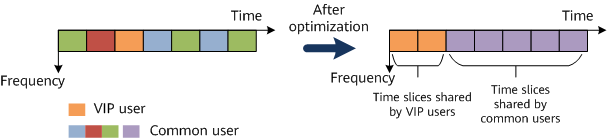

A device identifies a user as a VIP if the user belongs to a VIP user group. The priority field is added to the user authorization structure. After users are added to a VIP user group and the authorization information is delivered to the VIP user group, users in the VIP user group inherit the priority of the VIP user group.
Leveraging intelligent scheduling policies, scheduling based on users and service levels enables VIP users to enjoy a higher priority than common users in various scenarios, especially in poor network conditions. For example:
Refined allocation of time domain resources for VIP and common users can precisely allocate air interface transmission opportunities to VIP and common users. This ensures the transmission priority of VIP users and enables VIP users to enjoy higher air interface bandwidth.
Air interface bandwidth reservation for VIP users enables VIP users to preferentially enjoy experience improvement brought by domain resource reservation in the case of air interface congestion.

The algorithm for reserving air interface bandwidth for VIP users is based on radios. It ensures VIP user experience by reserving bandwidth (that is, reserving corresponding time slices) for VIP users. The reserved bandwidth is shared by all VIP users.